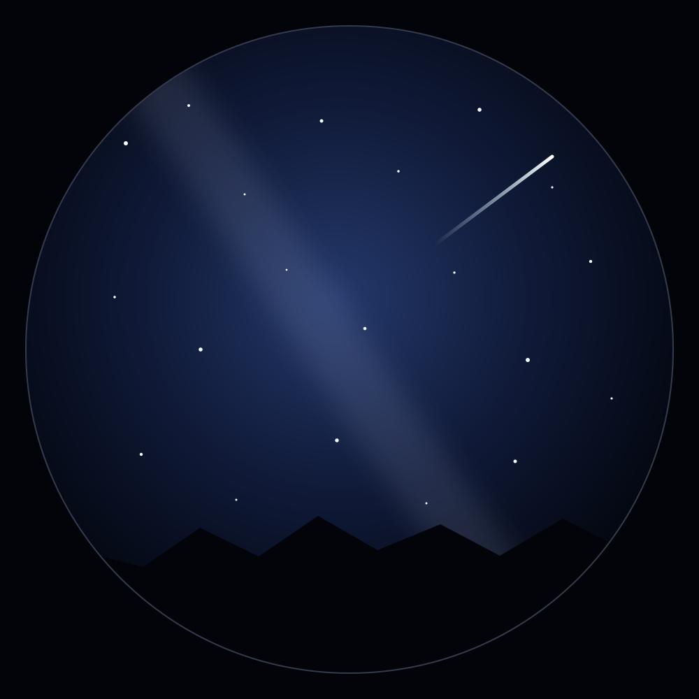
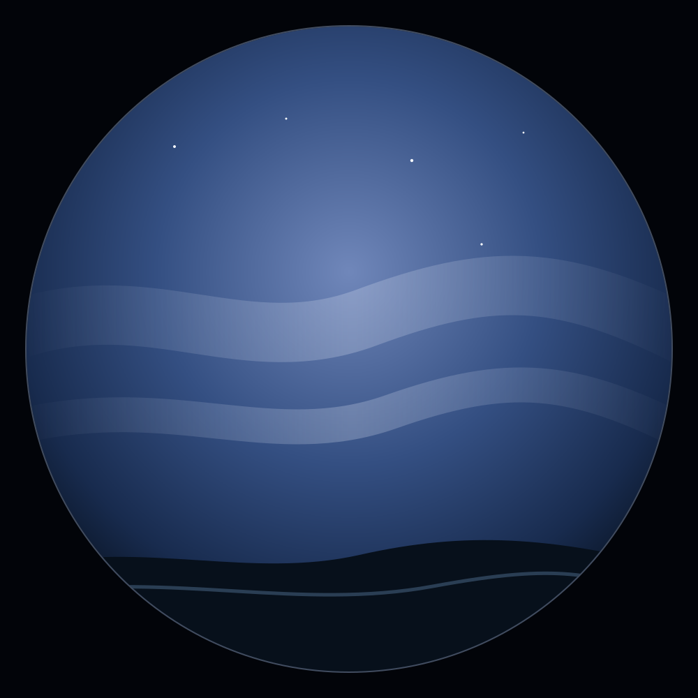
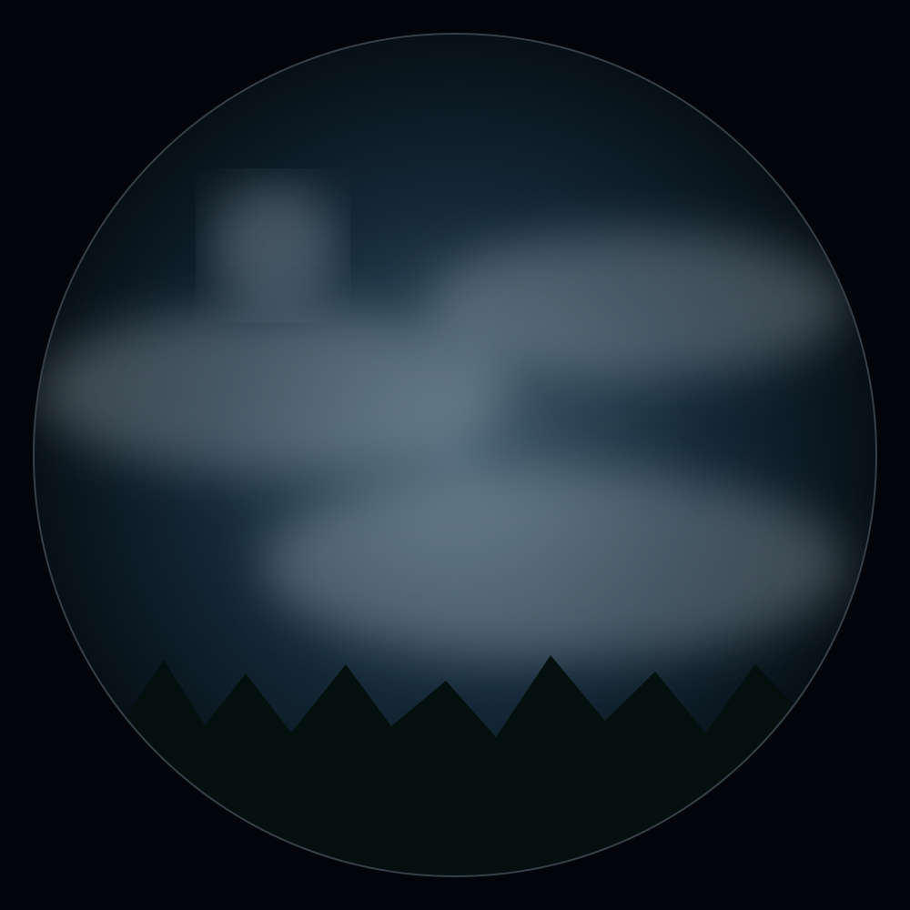

Sonoran Sky
CapturingPublished location: central Arizona region. Dark-sky monitoring with a broad desert horizon.
- Cloud
- 6%
- Age
- 46 sec
- Cameras
- 2 public
Public network directory
Explore observatories that have chosen to publish. Map positions honor each observatory's location precision policy and may identify only a region.

Published location: approximate, Island of Hawai'i. Two public camera views.
Published location: central Arizona region. Dark-sky monitoring with a broad desert horizon.

Published location: southeastern Australia. Southern-sky coverage and weather context.

Published location: northern Japan. Northern horizon coverage under changing coastal weather.